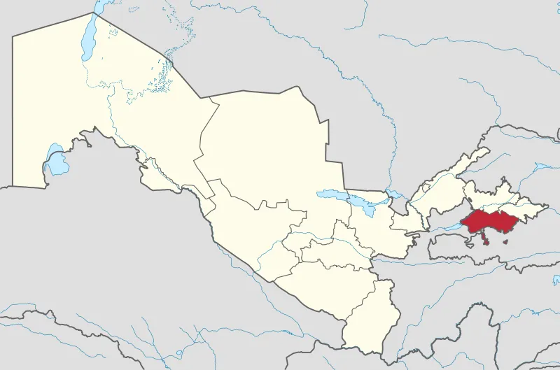

Farg'ona viloyati


Fargʻona viloyati — Oʻzbekiston Respublikasi tarkibidagi viloyat. 1938-yil 15-yanvarda tashkil etilgan. Respublikaning sharqida, Fargʻona vodiysining janubida joylashgan. Shimoldan Namangan, Andijon viloyatlari, janub va sharqdan Qirgʻiziston, gʻarbdan Tojikiston Respublikalari bilan chegaradosh. Maydoni 6,8 ming km2. Aholisi 2020-yilda 3,817,000 kishi. Tarkibida 15 tuman, 9 shahar (Beshariq, Margʻilon, Rishton, Fargʻona, Yaypan, Quva, Quvasoy, Qoʻqon, Hamza), 10 shaharcha, 164 qishloq fuqarolari yigʻini bor (2004). Markazi — Fargʻona shahri.
Fargʻona viloyatining shimoliy qismini Qoraqalpoq va Yozyovon dashtlari egallagan, janubdan Olay tizmasidan oqib tushadigan daryolarning yoyilmalari bilan oʻralgan. Janubda adirlar Olay tizmasining togʻ oldilari bilan almashinib turadi. Fargʻona viloyati yuqori seysmik zona hisoblanadi. Iqlimi kontinental. Qishi birmuncha yumshoq, baʼzan havo juda sovib ketadi. Yanvar oyining oʻrtacha harorati — 3,2 °C, iyulniki 28 °C. Eng past harorat —27,9 °C. Eng yuqori harorat 42 °C. Vodiyning gʻarbida esadigan kuchli „Qoʻqon shamoli“ iqlimga salbiy taʼsir etadi. Shamolning tezligi sekundiga baʼzan 35–40 metrga yetadi. Janubi-sharqida yozda garmsel esadi. Yiliga gʻarbida 100 mm dan (Qoʻqon atrofi) sharqiy qismida 170 mm gacha, togʻ yon bagʻirlarida 270 mm gacha yogʻin tushadi, asosan, bahorda yogʻadi. Vegetatsiya davri 210—240 kun. Viloyatning shimoli-gʻarbiy chegarasi boʻylab Sirdaryo oqadi. Olay tizmasidan Isfara, Soʻx, Shohimardon, Isfayramsoy boshlanadi. Daryolar muzlikqor suvlaridan toʻyinadi. Iyul— avgustda toʻlib oqadi. Daryo suvlari sugʻorishga sarflanadi. Asosan, boʻz tuproq va oʻtloqi botqoq tuproklar keng tarqalgan. Adirlarda aksari och va tipik boʻz tuproqlar, Sirdaryo terrasalarida allyuvialoʻtloqi tuproqlar, viloyatning shimoliy qismida shoʻrxok oʻtloqlar va ajriqli oʻtloqlar mavjud.
Qishloq xoʻjaligining asosiy tarmoklari — paxtachilik, gʻallachilik, pillachilik, bogʻdorchilik va chorvachilik. Viloyatdagi barcha ekin maydoni 288,9 ming ga, shu jumladan, 129,6 ming ga yerga don, 115,9 ming ga yerga paxta, shuningdek, texnika ekinlari, 11,7 ming ga yerga sabzavot va poliz ekinlari, 24,1 ming ga yerga ozuqa ekinlari ekiladi. 20,3 ming ga yaylovlar (2004). Haydaladigan yerlarda, asosan, obikor dehqonchilik bilan shugʻullaniladi. Paxta, bugʻdoy, sholi, makkajoʻxori, arpa, kartoshka, sabzavot va poliz maxsulotlari yetishtiriladi. Bogʻlarda koʻproq oʻrik oʻstiriladi. Anor, anjir, olma, xurmo koʻp. Tokzorlarda yuqori navli uzumdan moʻl hosil olinadi. Sugʻoriladigan yerlar viloyat hududidan oʻtuvchi Katta Fargʻona va Andijon kanallari, Janubiy Fargʻona kanali, Shohimardonsoy, Margʻilonsoy, Soʻx, Isfayramsoy, shuningdek, Karkidon, Koʻrgʻontepa suv omborlari yordamida sugoriladi. Viloyatda 8 mingdan ortiq fermer xoʻjaligi, 143 shirkat xoʻjaligi, 74 xoʻjaliklararo korxonalar, 6 parrandachilik fabrikasi mavjud. Chorvachilikda qoramol, qoʻy va echki, parranda boqiladi. Viloyat jamoa va shaxsiy xoʻjaliklarida 511,9 ming qoramol (shu jumladan, 213,2 ming sigir), 431 ming qoʻy va echki, 1260,9 ming parranda bor (2004).